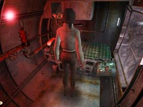
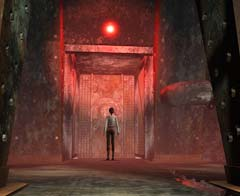
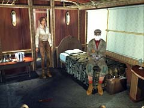

| 概要 | 地図 | |
| 淡いヒント集 | ヒント集 | 的確なヒント集 |
| 攻略最短ルート | Syberia 攻略へ |
| 地域選択へ | 次の段階へ >> |
コムコルツグラッド
|

オスカーにゼンマイを巻くように頼まれたあなたは、プラットホーム付近に建てられた人型の建物へ行かなければならない。ホームの奥へ行き、はしごを登れば着くので、探すのは難しくない。 部屋に入ったら、まずベッドの上にある棚を調べて欲しい。 棚にはシリンダーと、この建物の簡易設計図、そしてハンドルがある。簡易設計図を見ると分かるのだが、この建物はゼンマイを巻く機能を備えているのだ。では、ハンドルはどのように使うのだろうか。 
ハンドルは、窓側にあるこの装置に取り付ける。このハンドルを上下させることにより、建物自体を移動させることができる。ゼンマイを巻くには、赤いボタンを押せばよい。 ゼンマイを巻く装置が足下に付いているので、建物が機関車をまたぐまで移動させればいいので簡単であろう。 ここで少し考えて欲しい。機関車から見て一番奥は建物とハシゴをつなぐため、一番前はゼンマイを巻くため。それでは、中間地点は何か?

 ゼンマイを巻いたあなたは、機関車から飛び出しす怪しい人物を目撃する。怪しい人物は町の奥へと消えていくのだが、後を追ったところで扉は開かない。 仕方ないので、機関車へ行ってみよう。画像のようにオスカーが動けなくなっているはずだ。彼はぺちゃくちゃと犯人について話してくれるが、実のところあまり意味はない。 ここで重要なのは、彼の証言よりもこの部屋に落ちているペンチである。このアイテムを忘れずに拾っておこう。 |
| 地域選択へ | 次の段階へ >> |
| 概要 | 地図 | |
| 淡いヒント集 | ヒント集 | 的確なヒント集 |
| 攻略最短ルート | Syberia 攻略へ |
Syberia
| 目次へ戻る | ページの上部へ |